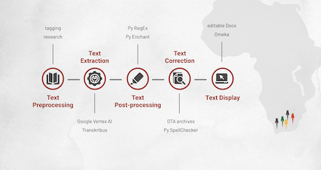

Summer 2024
Early Cape Travelers
Project Lead: Grant Parker
From roughly 1488 to 1900, the colonial Cape of Good Hope was the subject of numerous travel accounts by Europeans. Despite the obvious ethnocentrism of their colonial perspective, these accounts are historically valuable for the unique information they contain, including details on natural history, ethnography, and topography. While these travel accounts typically feature basic maps, the goal of the Early Cape Travelers project is to create high-quality digital maps for as many itineraries as possible. By mapping a critical mass of these texts with ArcGIS, we aim to detect broader geographical patterns that transcend any single journey, such as the persistence of certain routes over time and divergences from them. This is the focus of our first project this summer. Also, while many of these key texts, operating as our”sources” for the mapping, have been edited with commentary and translation by the Historical Publications of South Africa (HiPSA), many others still await high-quality new editions and translations, and this is the focus of our second project this summer.
Project Members
Project Member
Designation
Grant Parker
Associate Professor of Classics and African and African American Studies
Sam Prieto Serrano
Undergraduate Researcher, Summer 2024
Transcribing Peter Kolb and the Early Cape of Good Hope
At the beginning of my internship, I was introduced to Peter Kolb, an 18th century German explorer and naturalist, and his book “Caput Bonae Spei Hodiernum” or “The Present Cape of Good Hope.” Written in High German and published in 1719, the book covers Kolb’s 7 years at the Cape, and in it he details its geography, flora, fauna, indigenous peoples, and Dutch colonial settlement.
My task was to make Kolb’s book, which existed only in images, into machine-readable and editable text in order to be used for later research. To begin the trancription journey, I familiarized myself with the book’s layout and manually skimmed all 992 images, tagging them based on common layouts. About 750 pages had two columns of text with minor outer-margin text (Group A), while the rest of the pages had varying layouts with columns, headings, tables, or images (Group B). Thus, my first challenge was finding transcription tools that handled the two biggest hurdles of the book: understanding early-modern Fraktur German print writing, and secondly, recognizing the reading order between columns and headers.
Book Layouts
Below are sample pages displaying three of the various page layouts found in the book. The first image shows text belonging to one of the chapters. Note that about 80% of the book has this text layout. The second image shows the ending of a chapter followed by the title and beginning of the next. Finally, the third image shows one of the 80 index pagess found at the end of the book.
Extraction Methods
After experimentation with many large-laguage models (LLMs), open-source software, and web apps, I found an efficient combination of methods and tools to complete the transcription.
For Group A, I was able to write a Python script for Google Cloud Platform’s “Vertex Vision AI” API. In my script, I take each page as an image, crop it into regions using predetermined coordinates, pass the regions to the Vision AI processor, and I get text output in the same order as the regions. For Group B, which had layouts too complex to crop into regions systematically, I used the Transkribus transcription platform. Within Transkribus, I manually created ‘bounding boxes’ over every text region I deemed necessary, ran a Transkribus pre-trained LLM, and then edited or organized the text around the model’s errors.

Text Outputs
After weeks of text extraction, I moved to post-processing and correcting the exported files. This consisted of using a handful of NLP open-source software to correct things small (like removing or inserting spaces where needed) to large (like spell checking all 550k+ German words). I found that all spell checking tools available seemed to not handle the historical and domain-specific vocabulary of the book that well. This led me to create and feed my own dictionary of German words compiled fromm archival texts published between 1500 and 1800 into a custom spell checker program.

I can make the assumption that the various spikes in misspellings are likely due to the topic covered in certain chapters. If the discussion in those pages includes domain-specific vocabulary (while covering Hottentoten-specific scenes, for instance), then it is possible words in those pages will be be scare or unseen elsewhere in contemporary German publishings, which is the data used to train the spell checker.
Ultimately, I was able to bring all text, images, and tables together into a Docx document that is readable, editable, and searchable for specific content depending on the research goals. Along the way, I also produced clean and corrected txt files for the book that are ready for future text processing or analysis methods.